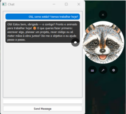

Emotion Recognition
Recognises emotional cues through facial expressions, voice and written text.
An emotion-aware virtual assistant that recognises users' emotions and adapts its responses through its own personality and emotional behaviour.
Internship Project · December 2025Chroma AI is an emotion-aware virtual assistant developed during my internship at team.it / MoOngy. The project aimed to create a more personalised interaction between users and a virtual assistant by recognising emotional cues from facial expressions, voice and text.
I was responsible for developing the application from the ground up, integrating existing emotion recognition models and external AI services into a complete system. Throughout the development process, I worked independently while maintaining regular meetings with the company and my supervisor to discuss progress and development decisions.
Recognises emotional cues through facial expressions, voice and written text.
Combines information from different input sources to better understand the user's emotional state.
Gives the assistant its own personality and characteristic way of communicating.
Buddy has simulated emotional states that influence its behaviour and the way it responds to users.
Adapts its responses according to the user's detected emotions, Buddy's personality and its current feelings.
The project was developed using Python and a combination of frameworks, machine learning libraries and external AI services.
